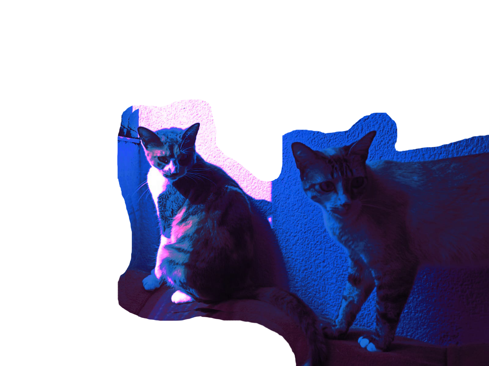
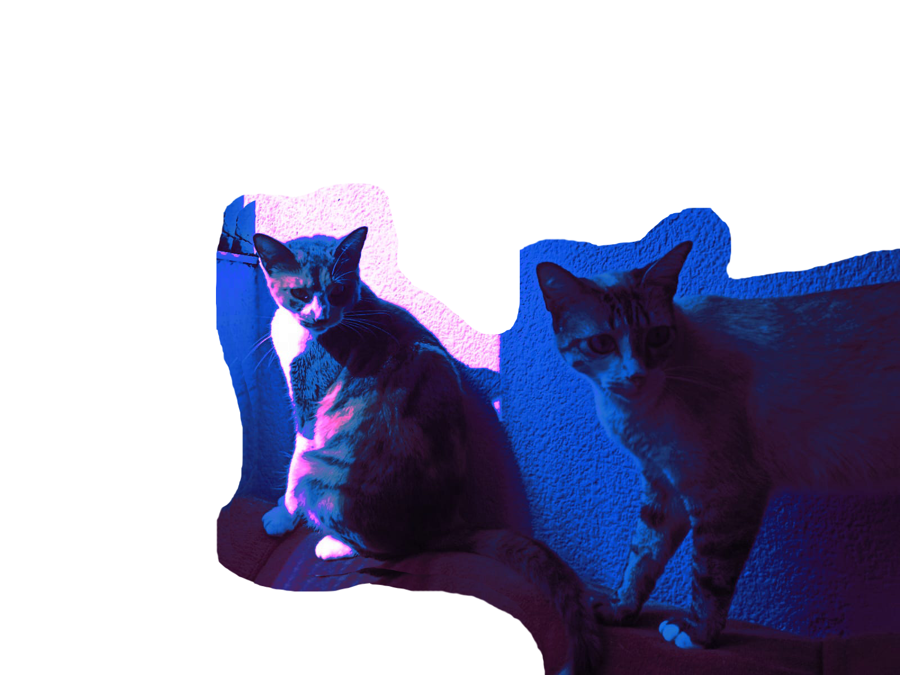
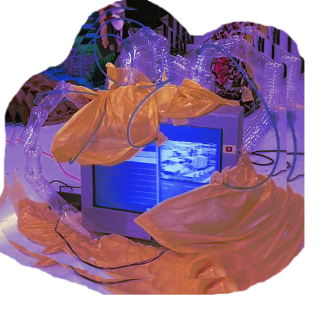
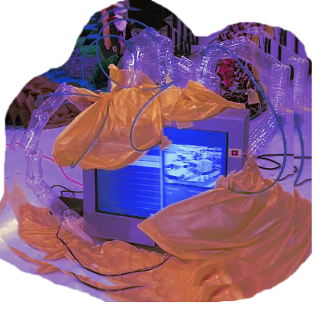

Ana Gutiérrez
mujeres intensas/plenas ¿rebelión? REBELIÓN no hay rosa que ardan las calles que se caiga todo seamos locas /seamos libres
Este es un llamado a la acción, a una revolución digital de la autenticidad. Mujer digital, no te sometas a los filtros de belleza en redes sociales. ¡Mujer digital, únete a la lucha!
 


 
